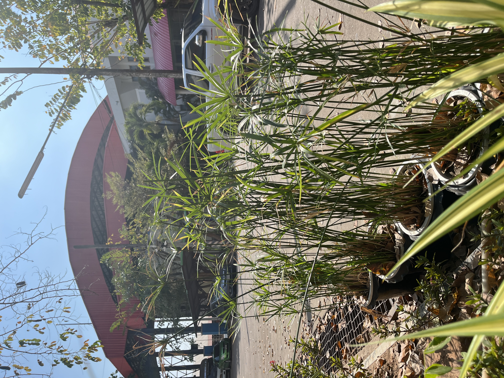
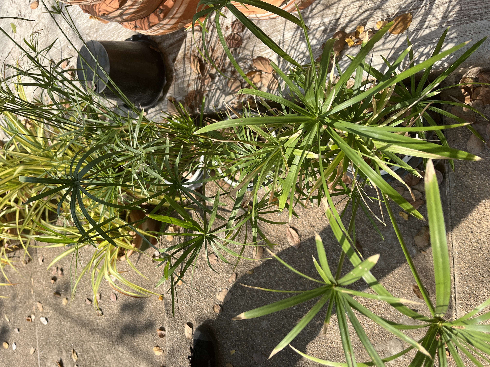

ชื่อสมุนไพร: กกลังกา
ชื่ออื่นๆ: กกขนาก, กกต้นกลม, หญ้าลังกา
ชื่อสามัญ: Umbell plant, Flatsedge
ชื่อวิทยาศาสตร์: Cyperus alternifolius L.
ชื่อวงศ์: CYPERACEAE
ลักษณะทั่วไป
กกลังกา หรือที่รู้จักกันในชื่อวิทยาศาสตร์ว่า Cyperus alternifolius เป็นพืชล้มลุกที่พบได้ทั่วไปในประเทศไทย มีลักษณะเด่นคือใบเรียวยาวสีเขียวสดชื่น และดอกที่มีลักษณะเฉพาะตัว มักถูกนำมาใช้ในทางสมุนไพรและการประดับตกแต่งสวน
วิธีการปลูกและการดูแล
- ดินที่เหมาะสม: ดินร่วนหรือดินที่มีการระบายน้ำดี เช่น ดินผสมทราย
- แสงแดดและน้ำ: ต้องการแสงแดดครึ่งวันถึงเต็มวัน และควรรดน้ำสม่ำเสมอ
- การดูแลรักษา: ใส่ปุ๋ยคอกหรือปุ๋ยอินทรีย์ทุก 2-3 เดือน และตัดแต่งใบแห้งออกเพื่อกระตุ้นการเติบโต
ประโยชน์ของกกลังกา
ทางสมุนไพร
ช่วยลดการอักเสบ บรรเทาอาการปวดเมื่อย และช่วยลดความดันโลหิต
ด้านการตกแต่งสวน
เหมาะสำหรับจัดสวนในสไตล์โมเดิร์นหรือทรอปิคอล โดยสามารถปลูกในกระถางหรือริมสระน้ำได้
การอนุรักษ์สิ่งแวดล้อม
กกลังกามีความสามารถดูดซับน้ำส่วนเกิน และช่วยปรับปรุงคุณภาพดิน
ภาพของกกลังกา

